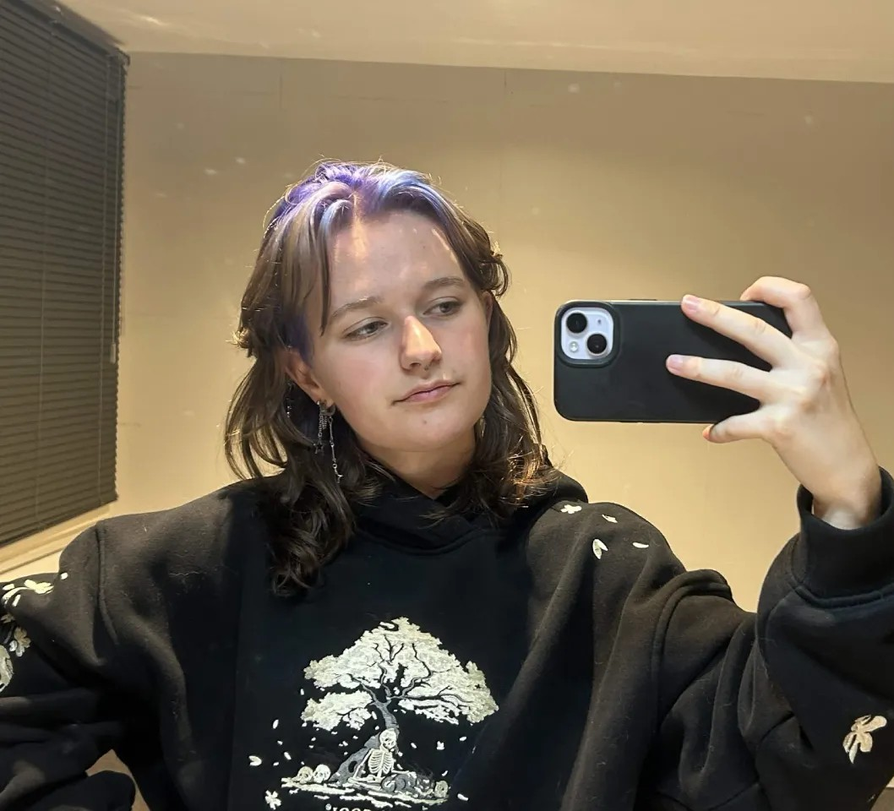

Hi,
Ik ben Tess van Gurp, een multidisciplinair ontwerper gevestigd in Breda. Momenteel studeer ik Communication & Multimedia Design (CMD) aan Avans Hogeschool.
Ik combineer mijn liefde voor maken met zowel ambachtelijke technieken als digitale middelen. Ik experimenteer graag met tekenen, knutselen en solderen, maar werk ook digitaal aan websites en grafische ontwerpen. Zo geef ik mijn ideeën op verschillende manieren vorm.
Van een chaotisch hoofd vol onmogelijke ideeën maak ik visuele concepten die ik zelf experimenteer, bouw en perfectioneer.

Profiel & Vaardigheden
Ervaring
2025 – Nu
CMD-student
Een hbo-ontwerpopleiding waar creativiteit, technologie, design en onderzoek samenkomen. Je bent analytisch en creatief en je houdt van experimenteren.
Vaardigheden
Interactieontwerp
Physical Computing
Lasersnijden & Graveren
3D Printing
Rapid Prototyping
Speculatief Design
User Journey Mapping
Merken & Packaging
Subjective Mapping
Software
Ps
Ai
Ae
Id
Pr
Figma
Arduino